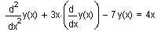
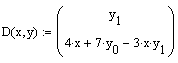
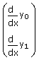

Deriving Initial Conditions for an ODE |
bvalfit(v1, v2, x1, x2, xf, D, load1, load2, scoreb)
sbval(v1, x1, x2, D, load1, scorei)
Returns a vector containing those initial values left unspecified at x1 for the ODE or system of ODEs identified in D. These initial values can then be used in one of the ODE solvers. If you know some values of the solution and its first n − 1 derivatives at an intermediate value, use bvalfit. If you know some values at the initial and terminal points, use sbval. The boundary value problem is converted to an initial value problem by shooting from the endpoints and matching the trajectories of the solution and its derivatives at an intermediate point.
D(x, y) is an n-element vector-valued function of the independent variable, x, and a vector of functions, y, containing the equations for the first derivatives of all unknown functions in the system of ODEs. To create this vector, cast your equation(s) with a first derivative term by itself on the left-hand-side, with no multipliers, and no higher order derivatives in the equation. For example, a single ODE of the function y(x) which contains a second derivative must be written as a system of equations in y0(x) and y1(x), where the first derivative of y0 is y1. The single-function ODE

is rewritten for the solver, using vector subscripts, as
 with implied left-hand-side 
bvalfit is especially useful when the derivative has a discontinuity somewhere in the integration interval.